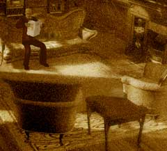
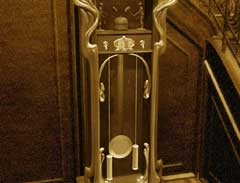
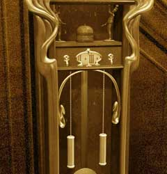

|

工場に入ったら、右へ移動し大きな家の中へ入ろう。 そして、ソファーの上に座り新聞を読んでいる、ハンスとアンナの父 ボラルバーグに話しかけてみよう。彼は、ハンスを閉じこめた張本人であるので、ハンスの居場所を知っているし、あなたに教えてくれるはずだ。 しかし、屋根裏へと続く鍵までは渡してくれないだろう。 ”この世界の時間は止まっている”という趣旨の発言をボラルバーグがしていたのは覚えているだろうか? ハンスの夢の世界は、時間の流れが止まっているのだ。 ボラルバーグの持っている鍵を手に入れるには、彼がいないうちに部屋を調べて盗み取るしかない。そのためには、夢の世界の時間を動かし、ボラルバーグを出勤させなければならない。

時計上部の針のある時計と、中央の文字盤だけの時計を見てみよう。二つの時間がずれている。ここで、中央の時計の左右に付いているスイッチを操作し、上部の時計と同じ時刻である「2:45」にあわせてみよう。 そして、上にある2体の鐘突人形を回し、分銅を動かしてみよう。

ちょうどこんな風に。 カチカチという音が時計から聞こえてきたら、成功である。これで、時計に動力が生まれた。しかし、まだ世界の時間は止まっている。 |